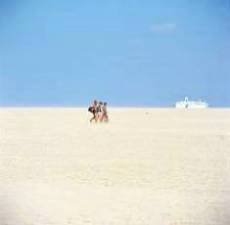

I was born in Glasgow in 1962. My ancestors are all Scottish bar one Huguenot on the run. I grew up in Scotland, breathed in its air, walked on its hills, swam in its chilly lochs, stared fascinated at the huge FREE SCOTLANDs painted on cliffs and city walls alike. I am Scottish.
But I am classified as an Anglo-Scot because I received an English-style education in Scotland. I was surrounded by English accents while I grew up, and I normally speak English with an English accent. This means that when I meet Scots, they might say something like: “You’re English, aren’t you?” To which I reply: “No, actually, I’m Scottish!” Which annoys them. Because, while the majority of Scots can accept that the English speak English with an English accent, there are few Scots who can accept that a Scot speaks it with an English accent.
In The Dark Horse, #15, Summer 2003, there is a review by John Lucas of a poetry anthology, Dream State: The New Scottish Poets, called “A Larger Assembly”, in which he complains at the inclusion of Carol Ann Duffy, Kate Clanchy, Roddy Lumsden and Tracey Herd. He writes:
The reason I have nothing to say about Carol Ann Duffy is that she doesn’t lack for praise and that, to be honest, she seems marginal to the anthology’s centripetal drive.
He credits the talents of Kate Clanchy and Roddy Lumsden before writing:
But Scottish? Well, yes, by accident of birth, and maybe in their slightly appalled fascination with sex. But the state they are in borders most closely on Armitage-land,…
Now, this is woolly thinking. What gives Lucas the right to deny poets their nationality based on his superficial examination of their poetry? Carol Ann Duffy’s parents are both Glaswegian, and she lived in Glasgow till she was six. Kate Clanchy’s mother and all her family are Scottish (her father is essentially Irish), and she was born in Scotland and lived there most of the time until she was 22. Roddy Lumsden is absolutely Scottish, only recently moving to England. Tracey Herd too, and she lives in Dundee. But Lucas does not see them as “fitting in” to his idea of what comprises Scottishness. Presumably, Lucas would call them UK poets. But all the other poets are UK poets too. I would argue that anyone who was born in Scotland of Scottish parents and has lived in Scotland for a significant period of their childhood is Scottish. Whether it’s a Scottishness that appeals to Lucas should not be part of the equation. Excluding Anglo-Scots from the Scottish “assembly” is tantamount to defining Scotland in opposition to England, which is not very constructive.
I can accept that I am regarded as an Anglo-Scot on account of my accent, but I am no more English than I am Norwegian, and it’s disconcerting that a pure-blooded African with a Scottish accent is accepted as Scottish more readily than I am. I’m Scottish everywhere else but in my mother country, and as a Yugoslav refugee in Denmark once said, “It’s easier to be a stranger in a foreign country than a stranger in your own.”
My parents paid to have me educated at boarding school from the ages of 8 to 18. I was groomed for Oxbridge, and I duly won an Exhibition in Classics to New College, Oxford. But I was tired of Classics. Instead, I found myself concentrating on an unsystematic, autodidactic musical education. At the start of 1985 I quit university and subsequently spent two and a half years busking in the streets of Europe.
In May 1986 I met my future wife in Italy, and when she had to return to Denmark to resume her studies, I joined her.
In retrospect, I think it’s the fault of a Danish au-pair girl my family hired. She returned to Scotland a year later and visited us. She and I had apparently got on quite well so we were left together. I didn’t remember her at all — I was four or five years old — and our conversation was stilted. She suggested teaching me “Baa Baa Black Sheep” in Danish. Now I’d just learnt the Dutch version of this song from another au-pair girl, and I baulked at the prospect of learning it in yet another European tongue, so I told her I didn’t want to. “And anyway,” I added scornfully, “when will I ever need to speak Danish?” From what I have since learnt about the Danish mentality, I think this ex-au-pair girl cast a spell over me.
I started studying English at Århus University in 1988 and matriculated in 1990. At the beginning of 1991 my wife was offered a job as head of a media school in Esbjerg, and we moved to the island of Fanø.
We spent most of the first two weeks on the fantastic, wide sandy beach on the west coast collecting amber, thanks to a constant fresh south-westerly breeze. Then the wind suddenly dropped, and we witnessed a magical sunset on Søren Jessen’s Sand, a desert that has surfaced out of the Wadden Sea on the north-west tip of Fanø, and which still is an island at high tide.
Søren Jessen’s Sand
The tide is low, no wind to blow
the Wadden Sea inland;
and it is rare that fire and air
embrace upon the strand
where you and I now stand,
together, hand in hand,
on Søren Jessen’s Sand.
The sea, ablaze before the haze,
unfolds a silken dream;
he weaves the weft from right and left,
approaching his extreme,
and, running out of steam,
he sews a perfect seam.
And now the amber beam
the sun displays to meet our gaze
on water starts to tread.
Two seagulls hinge about the fringe
of tears their forebears shed.
The amber light turns red,
the grey with violet spread,
and — every ray now dead —
a phantom boat appears, afloat
behind the banks of mist.
The waves begin to tiptoe in;
and here’s the final twist.
We see that they have kissed
an amber amethyst
the size of someone’s fist.
[ First Prize, Quantum Leap Open Competition, November 2002 ]
We found the nature and culture of Fanø conducive to our creativity. Apart from a plethora of musicians, the special light here also attracts writers and artists. In April 1992 we bought a house on Fanø and we’re still here today.
Fanø has a very distinguished seafaring history. Before the advent of steam engines and until sand began to clog up its harbours, it boasted a huge merchant fleet that sailed round the world, and until 2004 it housed the major part of a large maritime education centre. Due to this history Fanø has a lot of international elements. The first time I heard a local folk band playing, I thought every third number was a Scottish melody. “No,” I was assured. “They stole it from us!”
Weird as it may sound for an island of only 3,300 inhabitants, Fanø has its own pipe band. I owned a set of pipes and had learnt the chanter at school, so I became a member. My mother had always said that the only ambition she had for me was to see me play in a tattoo, and this was realised in 1993, but I doubt she imagined it would be one called The Fanø Tattoo.
Scottish and Irish folk music is very popular in South-west Jutland, and there is a large annual international folk music festival in Tønder. It’s no coincidence that the Scottish folk singer, Rod Sinclair, lives in the cathedral town of Ribe. I fell for the lyric tones of one visiting Scottish folk singer in particular, Derek Richardson of the Tandem Band. This influenced the development of my own music and writing.
I realised that apart from Robert Burns’ grace the only Scottish element in my formal schooling had been a year of Scottish history when I was ten. I had hardly read any Scottish literature. I determined to redress this, and I set my own university courses accordingly.
I took a supplementary degree in Latin, and in June 1995 I found permanent full-time employment at a sixth-form college/high school (called a gymnasium in Danish) in Esbjerg teaching English and Latin.
The Danish society is both a very tolerant one and a very moral one. In common with  Scottish society before its union with England, it is a tribal community. There is a strong social conscience and an egalitarian spirit, which has been a great relief to me after growing up in the class-ridden society in the UK. Here children are encouraged to speak their own truths from a young age. If my students are unhappy about something I have done, they will always tell me first, rather than whisper about it behind my back. Only if I failed to address the situation would they complain higher up.
Scottish society before its union with England, it is a tribal community. There is a strong social conscience and an egalitarian spirit, which has been a great relief to me after growing up in the class-ridden society in the UK. Here children are encouraged to speak their own truths from a young age. If my students are unhappy about something I have done, they will always tell me first, rather than whisper about it behind my back. Only if I failed to address the situation would they complain higher up.
The Danes are a peaceable and co-operative people, and they are very practical. They somehow manage the difficult art of being efficient and hard-working on the one hand, yet relaxed and informal on the other. They have a concept called hygge, which means just relaxing and enjoying yourself in good company. Their education system has a strong social aspect, and they resist the temptation to move children up classes just because they are brighter than their schoolmates. In Denmark kids don’t start school until they’re six, and they’re not normally split up according to gender. Parents wouldn’t send children to boarding school unless it was unavoidable. The pedagogical tradition in their education system gives teachers a freer hand than in the UK, and Danes have a very strong respect for literature and culture.
I am a well-integrated immigrant, but I still have special privileges to be outspoken in my role as an outsider. An example is the speech I made at the latest Christmas lunch for the staff at my school. Telling my story from a third person’s point of view, I related the experience of an exchange teacher with a class doing a social studies project on “the family”. He had been amazed that none of the students had included any negative factors in their reports. There was no mention of strife, stress, psychological illness, wife-battering, suicide, etc. And this had made him reflect on the fact that in surveys Danes are consistently rated as the happiest nation in the world. This had in turn led him to compose the following poem:
On Paper
According to a recent test
the Danes are those who like life best;
without a doubt they’re happiest,
on paper.
But did they ask the prostitute,
or him next door with just one foot?
Or did they think the new recruit
was safer?
And who’s to say they aren’t all mad?
Perhaps their “happy” means “not sad”
and many Danes just say they’re glad
routinely,
while folks from other countries think
they’re blue unless they’re in the pink.
Perhaps in Danish “mope” means “stink
obscenely”.
To judge by rates of suicide
there’s not much ground for Danish pride;
and here it’s certain no one lied
about it.
And somewhere else I’ve also read
that Prozac’s selling like hot bread.
So are they happy like they said?
I doubt it.
This went down very well. Partly because Danes are just delighted that immigrants speak their language; they forgave my poem because the rest of my speech had been in Danish. Another factor is that I’d clothed my criticism in humour, and Danes are a fun-loving people, no doubt the reason they top the satisfaction charts. But, most importantly, Danes respect freedom of speech. I’d hardly recovered my seat before another teacher of foreign origin, a Spaniard, stood up and indirectly, but at the same time very blatantly, criticised the Principal for his lack of open communication. The man had his say, everyone clapped, and there were no bad vibrations.
But the Danes can also be very critical when they don’t think foreigners have learnt their language well enough. Prince Consort Henrik is a man of many talents, but he doesn’t have the respect of many Danes solely on account of his having a very strong French accent. And when I had scored the top grade for my oral A-level exam in Danish in 1993, one woman on the island said: “How’s that possible with an accent like that?”
I’ve been lucky to find a home in Denmark, but I will always be a Scot by virtue of my roots. And the discerning eye will no doubt detect that in my writing.
Duncan Gillies MacLaurin was born in Glasgow in 1962, sent to boarding school in Perthshire, and awarded an exhibition in Classics to Oxford. He left without his degree, and after a short spell at London University he spent two years busking in the streets of Europe. In 1986 he met Danish journalist and writer, Ann Bilde, in Italy and went to live in Denmark. He took degrees in English and Latin at Aarhus University and since 1995 has taught at a high school in Esbjerg.